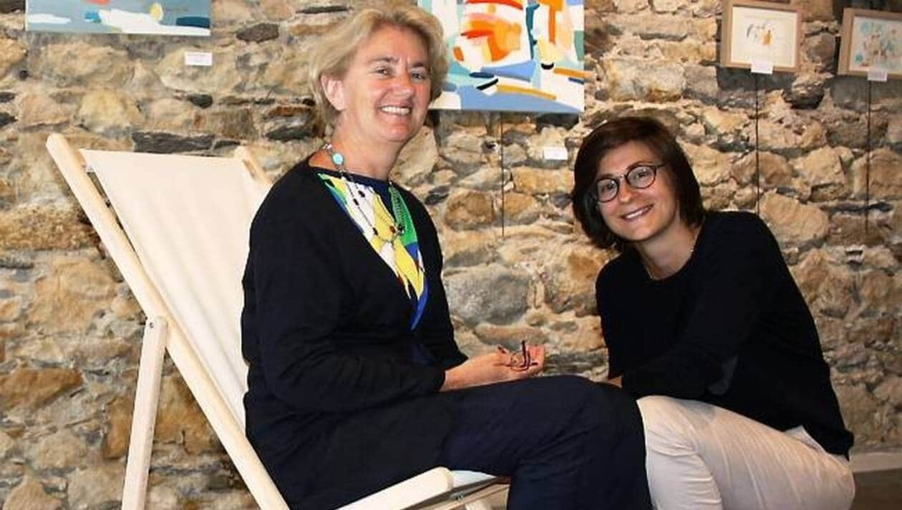

Biographie
Agnès est à la limite entre la figuration et l'abstraction. Des musiciens flottants comme des notes sur une portée musicale. Des danseurs de flamenco au milieu de nuages colorés, tout, chez Agnès Blandin Desportes nous suggère l'envol, la musicalité.
Son univers est celui des courses hippiques, de la chasse, des régates, et toutes ses toiles brillent autour d'une même énergie, simple et solaire.
Formation
- 1975-1976 : Année préparatoire - Atelier Met de Penninghen - Paris
- 1976-1979 : Ecole Nationale des Arts Appliqués et des Métiers d'Art , spécialité : art mural
Expositions
Centre culturel de Toulouse , mai 1981
Galerie Hélof à Paris , mai 1983
Galerie Gabriel François à Levallois , mai 1998
Banque Dexia ,Paris 8ème, janvier 2001
Galerie de Neuilly , mai 2001
Salon des Indépendants , mars 2003
Salon des Indépendants , mars 2004
Salon des Arts à Louveciennes , novembre 2004
Galerie Art Présent à Paris février 2006
Salon des Indépendants , avril 2007
OFIVALMO à Paris , mai 2007
7ème symposium de peinture et sculpture , Place Dauphine , juin 2008
"Art en Capital " au Grand Palais , novembre 2008
Inauguration d'un triptyque intitulé"Régate à Concarneau" à l'Hôpital Robert Debré le 28 novembre 2008
Salon des Indépendants , avril 2009
Salon d'automne , novembre 2009
"Les Salorges" à Noirmoutier , août 2010
Portes ouvertes d'atelier octobre 2011
Exposition collective dans la Mairie de Neuilly , mars 2012
Exposition collective dans la mairie de Neuilly , avril 2013
Exposition au Lézard créatif à Sceaux , septembre 2013
Portes ouvertes d'atelier , octobre 2013
Galerie Duvivier à Neuilly , janvier 2014
MJC de Neuilly , novembre 2014
Exposition "Mer et Filles" aux Salorges à Noirmoutier en l'Ile , juillet 2015
Galerie Duvivier à Neuilly, juin 2016
Créart'Lab, Neuilly, 2020